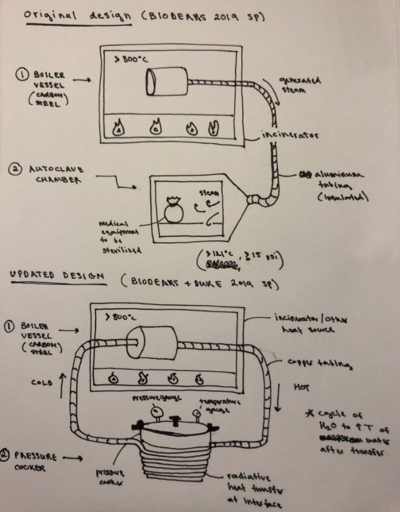
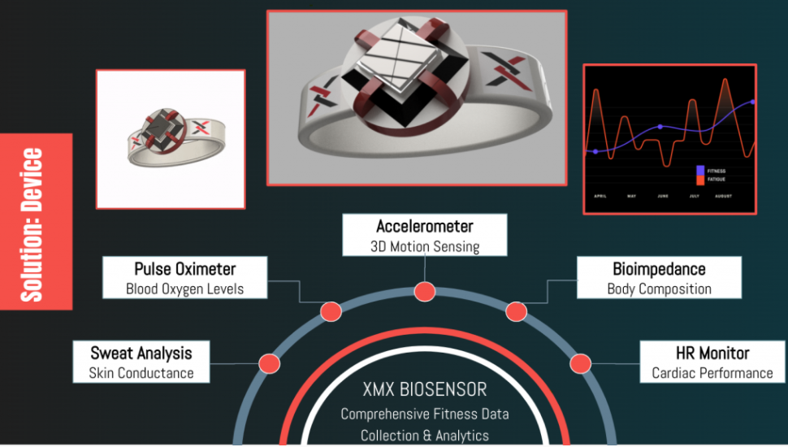
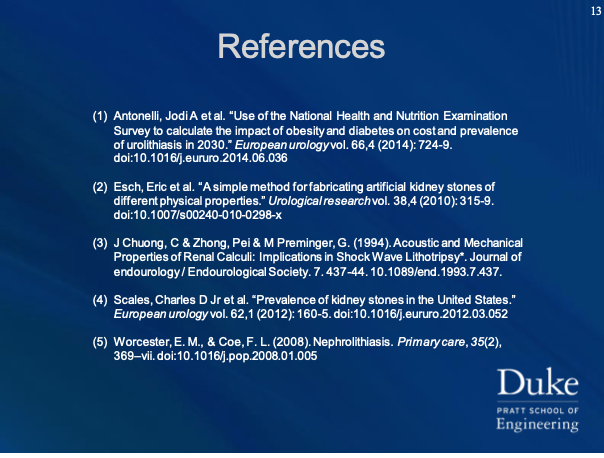

.png)
Neil Gupta
Engineer | Designer | Creator
Engineer | Designer | Creator
This project focused on the development of a custom-designed, 3D printed endoscopic sheath, for the purposes of guiding flexible nasal/sinus endoscopes through complex geometries of the ear, nose, and throat.
Primary design tasks included initial research on flexible endoscopes, design of the novel scope-fastening mechanism, iterative CAD generation, rapid 3D printing, testing, and development of the final working prototype.
Over the course of this project, a number of informal and formal technical designs were created to aid the engineering process. In order to better understand the primary design tasks described above, a sample of these technical deliverables has been included below.
Please do not redistribute or use without permission.
The gallery above contains technical drawings of the finalized prototype, as well as the CAD models used to 3D print and develop this device. These represent the final iteration of the design process, made up of approximately 15 intermediate prototypes that were tested on the physical endoscope.
By focusing on this project for almost 2 years, I was able to gain valuable skills in a number of areas, including the technical design of custom medical devices and rapid prototyping using 3D printing technology.
In addition to these core skills, I was able to collaborate with another student within Duke BME, Nisarg Dabhi ’17, as well as Dr. Adam Honeybrook M.D., an ENT resident at Duke Hospital. I gained experience working closely with these two in order to design and develop a solution to the problem envisioned by Dr. Honeybrook.
As the primary design engineer, I iterated designs over the years, working with different types of 3D printers (FDM, UV-Cured Resin) and manufacturing processes (CNC) to produce the final prototype used by Dr. Honeybrook in pre-human cadaver trials in 2018. Patents are currently pending.
This project focused on developing a low-cost, low-resource steam sterilization autoclave for targeted use in developing countries, where access to traditional autoclaves and regular electricity is limited. This is an ongoing collaboration between the Makerere University in Kampala, Uganda, and Duke University in Durham, North Carolina. Over the course of Spring 2019, I collaborated virtually with students at the MAK University in order to research, design, experiment, and develop a plan for solving the identified problem.
The initial goal of this project was to develop an autoclave that functioned using the heat from the waste incinerator, which hospitals must use in these conditions in order to dispose of medical waste. This plan was disrupted when we discovered that incinerators in these areas only operated once a day, at irregular hours. We quickly realized that the idea of using this method of waste incineration as fuel was too difficult to implement, and we pivoted to designing and testing a simpler version of the autoclave system. Essentially, we tested if a commercially available stovetop pressure cooker could be modified and used in developing a low-resource steam sterilization method.
This process involved validating the steam, temperature, and pressure conditions within the autoclave vessel during operation, specifically that these conditions were enough to meet sanitation guidelines and remove contaminants. A number of experiments were performed using chemical sterilization indicators and the selected stovetop pressure cooker, as well as a number of sample tools, a heat source, and water. We aimed to create a quick, cheap, easy, universal method for sterilizing medical equipment, even in the worst conditions.
Primary design tasks included solving the sterilization problem without incinerator access, researching resources in Kampala, assessing the technical feasibility of the new concept.
Over the course of this project, a number of informal sketches were created to aid in the ideation and engineering process. In order to better understand the primary design tasks described above, a sample of these technical deliverables has been included below.
Please do not redistribute or use without permission.

FIGURE 1 – Sketched Schematics for Proposed Autoclave System
FIGURE 2 – Initial Sterilization Experiments
Over the course of 4 months, I was able to gain valuable skills in engineering low-resource devices, designing experiments, assessing device function, and technical problem-solving.
This project provided me with valuable experience in working virtually, performing site visits, and physical research. In addition, being able to work with MAK and Duke Faculty to design and develop a working solution to a real-life problem was incredibly fulfilling. All of the teams were focused on creating low-cost, effective devices that solve life-or-death problems, such as sterile vaccine transportation or cleanable NICU incubators. It was motivating to see students and faculty working intensely on the very problems that tangibly affected their neighbors and friends.
Aside from the personal skills and experiences that I gained from this project, I also was able to see a part of the world I would have never known, Uganda. I learned how to be more conscious of the working environment for which I designed my devices, and use these considerations to help those in developing countries such as this one.
This project focused on creating a tool for assisting parents, nurses, and healthcare workers with the task of administering eye drop medication to young children, who are often restless and have difficulty keeping their eyes open. The solution to this problem is a novel mask worn by the patient, which helps both the patient and the drop applier.
This device has 3 main features that ensure stability, eye drop placement, and comfort for the wearer:
These features combine to make eye drop administration easy and fun for young patients and nurses alike.
Primary design tasks included ideation of the assistance method (stabilizing patient and increasing application area), design of the custom mask CAD, rapid 3D printing, and development of an intermediate prototype.
Over the course of this project, a number of formal renderings were created to aid in the ideation and engineering process. In order to better understand the primary design tasks described above, a sample of these technical deliverables has been included below.
Please do not redistribute or use without permission.
FIGURE 1 – EZ Drop Assistive Eye Drop Tool
FIGURE 2 – Key Features
FIGURE 3 – Inside View of the Device
The gallery above contains computer renderings of the device. I utilized a number of tools in order to create this model, including an STL of a human face, ergonomic measurements for my target patients (children), and simple experiments to determine how to improve drop application. The result was a form-fitting, stable, mask that allowed drops to be easily funneled into the user’s eyes.
While this project was short term (approx. 2 mo), I was able to gain valuable skills in a number of areas, including the technical design of custom medical devices, creative problem solving, and rapid prototyping using 3D printing technology.
This project provided me valuable experience with the computer design of devices as well as the operation of FDM 3D printers and basic prototyping techniques.
This project was focused on designing a wearable fitness biosensor concept based on a number of criteria and indicated key features. These criteria and features were determined by our business strategy team (XENOMAX), which investigated the customer segment of interest and identified the important factors in this technology sector today.
The result was a novel fitness wearable that integrated cutting-edge biosensing with a social media application to deliver a better way to work out and connect. By combining our team’s analysis with my design skills, I am confident that we were able to deliver a compelling product, which we pitched to a panel of business “sharks” in December 2019.
This device has a number of proposed features that would allow improved fitness monitoring for the patient:
In addition, the integration of the device with the social application has the potential to be a strong motivator for the fitness community, evident in fitness applications such as myfitnesspal and Peleton.
Primary design tasks included ideation of the device features, wearable type (watch, band, ring, etc.), and design of the device CAD.
Over the course of this project, a number of formal renderings were created for the business presentation and the pitch to the sharks. In order to better understand the primary design tasks described above, a sample of these deliverables has been included below.
Please do not redistribute or use without permission.
FIGURE 1 – Sample Advertisement for Product

FIGURE 2 – Key Device Features
FIGURE 3 – Sample from Pitch Slide Deck
The gallery above contains renderings of the device as well as some advertisements and slides from our pitch deck. I utilized a number of tools in order to create these images, including Fusion360 to generate device renderings and Adobe Photoshop to bring these models to life. The result was a futuristic, sleek product that we were able to confidently pitch to an experienced business panel.
While this project was short term (approx. 3 mo), I was able to gain valuable skills in a number of areas, including market research, competitive analysis, design of products, business strategy, and digital art/design for basic advertisements.
This project provided me valuable experience with the computer design of devices and images as well as with the planning of a business strategy around a product. I was able to work with 5 other talented Duke Masters students from a variety of fields and backgrounds on this project, and the experience me gave me genuine skills in communication, teamwork, and leadership.
This project focused on the development of a Python 3 script for analyzing raw HR data and detecting beats, performing basic safety monitoring, and manipulating a patient database in order to store and retrieve this information.
Primary tasks included Python program development and troubleshooting, Travis CI Unit Testing to assess script robustness, and systematic testing of the HR detection algorithm on over 30 patient HR data files.
This project was primarily non-physical and Python based; therefore the relevant deliverables were program function (as demonstrated in screenshots), unit testing completion, as well as appropriate logging, documentation, and PEP-8 formatting of final program code.
Please do not redistribute or use without permission.
FIGURE 1 – Sample Code
FIGURE 2 – HR Beat Detection Graph
Although I was only working on this project for 2 weeks, I was able to gain valuable experience in Python data processing, analysis, and database management. In addition, I learned basic engineering principles for applying computational tools to create diagnostic medical software.
This project focused on the design, research, and development of novel methods for producing biomimetic kidney stone phantoms. These KS phantoms aimed to recapitulate both the macroscopic and microscopic characteristics of naturally occurring kidney stones in humans.
The phantoms were created using a variety of techniques, including aerosol formation of calcium-oxalate films, additive liquid processes for generating thicker KS layers, 3D printed mold design for heat treated bulk samples, and mechanical analysis via compression testing.
In addition, there was a focus on recreating the chemical composition of actual kidney stones. In order to validate the composition of the fabricated models, clinical samples obtained from Duke Hospital lithotripsy procedures were analyzed via IR spectroscopy and compared to the KS phantoms.
Primary tasks included initial research on kidney stone occurrence and composition, high-level classification of the KS characteristics to be analyzed, chemical analysis via IR spectroscopy, sample trial/error and fabrication, mechanical experimentation & analysis.
In order to communicate the outcomes and findings from this project, key data analysis (quantitative & qualitative) was performed via microscopy imaging, mathematical data manipulation, and presented as part of the Duke Pratt Fellows Presentation 2019. This involved communicating the project goals, methods, outcomes, and critiques to undergraduate researchers, principal investigators, and lab assistants.
Please do not redistribute or use without permission.

By focusing on this project for 2 years, I was able to gain valuable skills in a number of academic areas, including the background research of human conditions, experimental design, and formal presentations. In addition, I gained familiarity with a wide array of unique lab techniques, such as the qNano TPRS Particle Analysis, basic CaOx crystal formation and isolation, Dimatix Ink-Jet Material Printer, QCM Biosensor Fabrication & Analysis.
In addition to these core skills, I was able to collaborate with research students and professors at Duke University. I gained experience collaborating with these graduate students and learning from their individual projects, all while progressing on my own independent research.
As the only researcher for this project, I iterated my KS phantom models over the course of 2 years, working to develop a comprehensive understanding of kidney stone formation and the many factors that affect mechanical composition. I aimed to create different models of kidney stones that captured their composition and characteristics at multiple scales. The techniques and methods developed from this project continue to contribute to ongoing student research on kidney stone formation at Duke University.
Welcome to my online portfolio! My name is Neil Gupta. I graduated from Duke University in 2019 with a B.S. in Biomedical Engineering. I recently completed my M. Eng. from Duke in Biomedical Engineering, with an Area Focus Certificate in Medical Device Design.
I love building projects from my imagination and engineering solutions to real-life problems. My passion for my work is fueled by my strong interest in medicine, engineering, and most importantly, making an impact on the world around me. You can find my CV here.